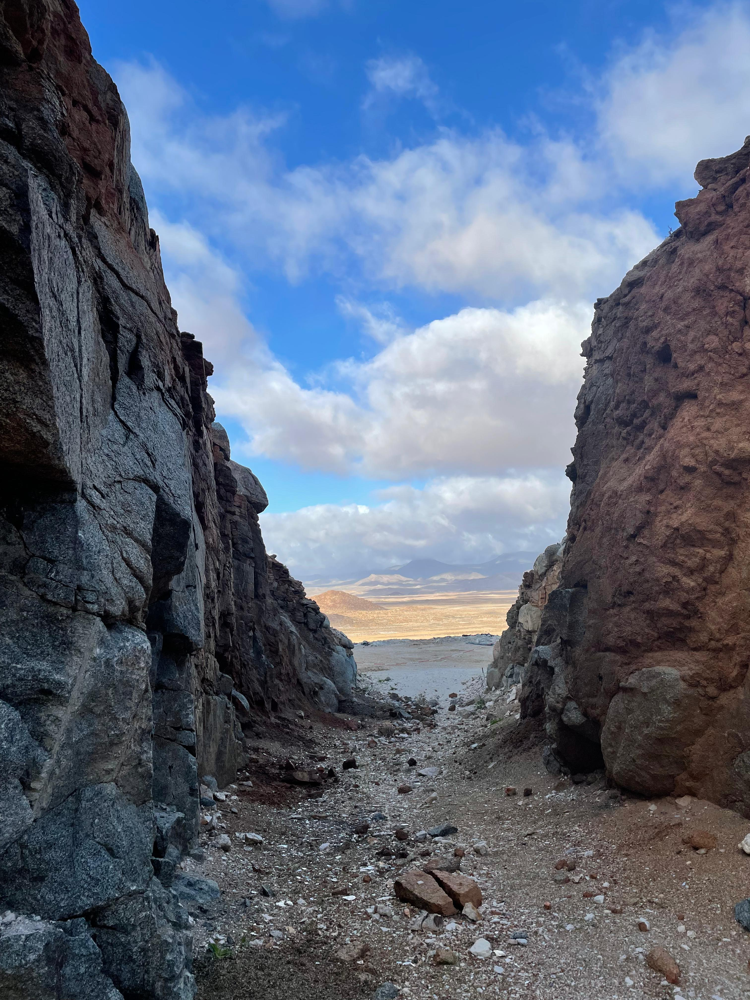

Crystal Cave Resources
About Us
Welcome to Crystal Cave Resources (Pty) Ltd. We are a private consultancy based in the North-West (Potchefstroom). Since established in 2022, Crystal Cave Resources (Pty) Ltd, stands as a premier consulting agency dedicated to bridging the expertise of scientists and engineers to deliver outstanding services within the geological and mining industries. Our firm takes pride in creating collaborative environments that harness the skills and proficiency of professionals, driving innovation and excellence in every project we undertake.

Mission
- Efficient Service Provision: We commit to delivering efficient services by employing cutting-edge technologies and industry best practices. Our focus is on streamlining processes to ensure timely and effective problem resolution.
- Provide good and satisfactory services: Our mission is to consistently provide high-quality and satisfactory services. We emphasize on continuous improvement and adherence to the highest standards in all aspects of our consulting services.
- Strategic Partnerships and Growth: Initiating partnerships with emerging businesses is a key component of our mission. We aim to align our growth with the scale of these businesses, targeting specific markets and contributing to their success through collaborative efforts.
- Youth Employment: Contributing to youth employment is a social responsibility we embrace. We aim to nurture talent and foster a dynamic work environment that benefits both our organization and the community.
- Strategic Investment in Mining Commodities: Our mission includes strategic investment in mining commodities by purchasing stocks. This proactive approach allows us to diversify our portfolio and actively participate in the growth and development of the mining sector, allowing the business to beat the prices of the competition upon operation.
- Diverse Specialization in Respective Services Offered: The business strives on having qualified and specialized personnel in different fields of services, ensuring efficiency and diligence.
Vision
At Crystal Cave Resources (Pty) Ltd, our vision extends far beyond simply being a consulting firm. Our vision is to establish a premier consulting firm with a comprehensive approach to providing geo-services and mining solutions. At the core of our vision is a commitment to addressing complex challenges faced by mining and geological operations. We aim to pride ourselves in offering holistic solutions that encompass various facets of mining and geo-services, by leveraging a diverse network of (young) scientists and engineers. We aspire to set new standards in the industry for excellence and innovation.

Our Values
-
Youth Empowerment
We believe in nurturing the next generation of leaders in the mining industry. Our aim is to empower young people to develop the skills and knowledge needed to drive the future of mining.
-
Honesty and Transparency
Integrity is at the core of our operations. We are committed to maintaining open and honest communication with our stakeholders, ensuring transparency in all our business practices. Our dedication to ethical conduct fosters trust and accountability.
-
Courage
Mining often involves navigating complex challenges and uncertainties. We face these with courage, making bold decisions and taking calculated risks to achieve sustainable growth and development. Our resilience and determination propel us forward.
-
Innovation
Our commitment to innovation drives us to continuously seek new methods and technologies to enhance efficiency, safety, and environmental sustainability. We embrace change and encourage creative solutions.
-
Quality & Passion
Excellence is our standard. We are passionate about delivering high-quality results in every aspect of our work. From exploration and extraction to rehabilitation and community engagement, our dedicated team strives to exceed expectations and set benchmarks in the industry.